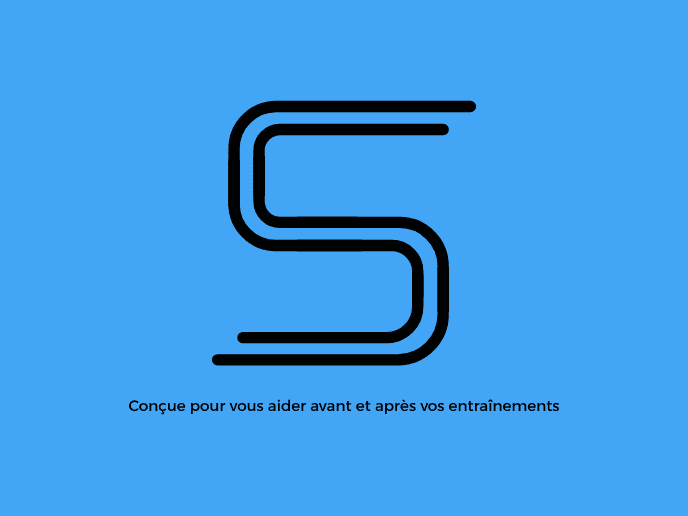

J'ai créé Sprintia pour 3 raisons :
· Premièrement, ça me saoulait que les constructeurs ne mettent pas à jour les dernières fonctionnalités sur des montres
plus anciennes alors qu'elles en sont totalement capables. C'est de l'obsolescence programmée via mise à jour parce qu'en plus
de ne pas avoir les dernières fonctionnalités, ma montre ralentissait au fur et à mesure des mises à jour. D'autre part,
de plus en plus de constructeurs ajoutaient un abonnement mensuel pour débloquer toutes les fonctionnalités. Donc ils veulent que
j'achète une de leur montre connectée et ils pensent que je vais prendre un abonnement en plus ?!
· Deuxièmement, je n'étais jamais à 100% content de la montre que je venais d'acheter. Il y avait toujours quelque chose qui me manquait.
Pourtant, j'ai testé des montres hyper connectées comme les Galaxy Watch de Samsung ou encore une Pixel Watch de Google mais j'ai
également testé des montres beaucoup plus sportives comme une Garmin car sur les montres connectées il n'y avait pas assez de fonctionnalités
de sport. Il manquait des algorithmes,... Garmin est très fort dans les algorithmes notamment grâce à Firstbeat (qu'ils ont rachetés), j'adore
vraiment leurs algorithmes mais un dernier point me gêne.
· Troisièmement, le problème avec une montre de sport c'est que pour faire marcher les algorithmes correctement, comme la charge d'entraînement,...
Il faut la porter lors de toutes mes séances de sport. Or, je déteste avoir une montre au poignet quand je pratique un sport collectif comme
le foot, le basket,... Et ne pas pouvoir avoir la charge d'entraînement de mon entraînement de foot ou de basket me frustrait. C'est
pour cela que je me suis décidé de faire les choses à ma manière.
Le but de Sprintia est de vous aider à vous entraîner avant et après un entraînement mais pas pendant ! Sprintia peut vous aider grâce à ses nombreux algorithmes à progresser dans votre sport sans avoir besoin d'acheter une montre connectée de sport haut de gamme.
Je m'appelle Gabriel, j'adore le sport, la tech et l'informatique.
Ce que j'adore dans le sport c'est les algorithmes qui
vont m'aider à m'entraîner et à progresser dans mon sport, sans avoir de coach. Je développe Sprintia pour vous aider
à optimiser vos entraînements grâce des algorithmes simples et efficaces.
N’hésitez pas à me signaler un bug à l'adresse suivante : sprintia09@gmail.com